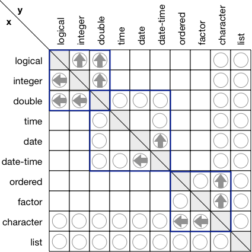

A useful way to understand the high-level structure of a function is to think about its type. Instead of worrying about the specific values that are returned, we can just think about the classes involved. For example, if you c() together an integer and double vector you get a double vector. To express this more succinctly, we’ll adopt a convention common in other programming langauges and write the class1 of the vector in angle brackets like <integer>, <double>. Then we can describe c() as c(<integer>, <double>) -> <double>.
The primary motivation comes from two separate, but related problems. The first problem is that base::c() has rather undesirable behaviour when you mix different S3 vectors:
# combining factors makes integers
c(factor("a"), factor("b"))
#> [1] 1 1
# even if you combine with a string
c("a", factor("a"))
#> [1] "a" "1"
# combing dates and date-times give incorrect values
dt <- as.Date("2020-01-1")
dttm <- as.POSIXct(dt)
c(dt, dttm)
#> [1] "2020-01-01" "4321940-06-07"
c(dttm, dt)
#> [1] "2020-01-01 00:00:00 UTC" "1970-01-01 05:04:22 UTC"
# as do combining dates and factors
c(dt, factor("a"))
#> [1] "2020-01-01" "1970-01-02"
c(factor("a"), dt)
#> [1] 1 18262This behaviour arises because c() has dual purposes: as well as it’s primary duty of combining vectors, it has a secondary duty of stripping attributes. For example, ?POSIXct suggests that you should use c() if you want to reset the timezone. A detailed comparison of vctrs vs base R behaviour can at the end of this vignette.
The second problem is that dplyr::bind_rows() is not extensible by others. Currently, it handles arbitrary S3 classes using heuristics, but these often fail, and it feels like we really need to think through the problem in order to build a principled solution. This intersects with the need to cleanly support more types of data frame columns including lists of data frames, data frames, and matrices.
vec_c() works like c(), but has stricter coercion rules:
vec_c(TRUE, 1)
#> [1] 1 1
vec_c(1L, 1.5)
#> [1] 1.0 1.5
vec_c(1.5, "x")
#> Error: No common type for <double> and <character>
#> Call `rlang::last_error()` to see a backtraceUnlike c(), you can optionally specify the desired output class by supplying a prototype, or ptype, for short:
vec_c(1, 2, .ptype = integer())
#> [1] 1 2
vec_c(1, "x", .ptype = character())
#> [1] "1" "x"
vec_c(1, "x", .ptype = list())
#> [[1]]
#> [1] 1
#>
#> [[2]]
#> [1] "x"This supports a much wider range of casts (more on that below) than the automatic coercions, but it can still fail:
vec_c(Sys.Date(), .ptype = factor())
#> Error: Can't cast <date> to <factor<>>
#> Call `rlang::last_error()` to see a backtracevec_c() works in two steps. First it finds a common prototype by calling vec_ptype(). Then it casts each input to that prototype by calling vec_cast(). Before we can talk about those important functions we need to define exactly what a prototype is.
Internally, vctrs represents the class of a vector with a 0-length subset. We call this a prototype, because it’s a miniature version of the vector that contains all of the attributes but none of the data. Conveniently, you can create many prototypes using existing base functions (e.g, double(), factor(levels = c("a", "b"))).
You can use vec_ptype() to create a prototype from an existing object. It has a print method that summarises the prototype:
vec_ptype(letters)
#> prototype: character
vec_ptype(1:50)
#> prototype: integer
vec_ptype(list(1, 2, 3))
#> prototype: listSome protoypes have parameters that affect their behaviour. These are displayed where possible:
# Factors display a hash of their levels; this lets
# you distinguish different factors at a glance
vec_ptype(factor("a"))
#> prototype: factor<127a2>
vec_ptype(factor("b"))
#> prototype: factor<ddf10>
# Date-times display their timezone
vec_ptype(Sys.time())
#> prototype: datetime<local>
# difftimes display their units
vec_ptype(as.difftime(10, units = "mins"))
#> prototype: duration<mins>vctrs defines the relationship between classes with two functions: vec_type2() and vec_cast(). vec_type2() is used to find the common type of two prototypes if it exists. vec_type2() is commutative, which means that vec_type2(x, y) == vec_type2(y, x).
The easiest way to explore coercion is to give multiple arguments to vec_ptype(). It uses vec_type2() to find the common type and displays the results in a convenient form:
vec_ptype(integer(), double())
#> prototype: double
vec_ptype(Sys.Date(), Sys.time())
#> prototype: datetime<local>
# no common type
vec_ptype(factor(), Sys.Date())
#> Error: No common type for <factor<>> and <date>
#> Call `rlang::last_error()` to see a backtracevec_cast() is used for explicit casts: given a value and a prototype, it casts the value to the prototype or throws an error stating that the cast is not possible. If a cast is possible in general (i.e. double -> integer), but information is lost for a specific input (e.g. 1.5 -> 1), it will generate a warning.
# Cast succeeds
vec_cast(c(1, 2), integer())
#> [1] 1 2
# Cast loses information
vec_cast(c(1.5, 2), integer())
#> Warning: Lossy cast from <double> to <integer>
#> Locations: 1
#> [1] 1 2
# Cast fails
vec_cast(c(1.5, 2.5), factor("a"))
#> Error: Can't cast <double> to <factor<127a2>>
#> Call `rlang::last_error()` to see a backtraceThe set of possible casts is a subset of possible automatic coercions. The following diagram summarises both casts (arrows) and coercions (circles) for all base types supported by vctrs:

vec_type2() is a binary operator defined on the set of types. We will call the result of vec_type2(x, y) the commmon type of x and y. The common type is only defined for a small set of pairs. If the common type does exist, we can say that x and y are uncoercable.
It has three useful properties:
vec_type2(x, vec_type2(y, z)) == vec_type2(vec_type2(x, y), z)
vec_type2(x, y) == vec_type2(y, x)
NULL: vec_type2(x, NULL) == x
Together, this means the type system forms a commutative monoid, which has a couple of appealing properties:
When have multiple types we can find their common type by progressively reducing (aka folding) vec_type2(). We’ll get the same results regardless of whether we reduce from left or right.
The operation of finding common type is parallelisable. For practial input size, parallelism is unlikely to helpful, but it’s nice property to have in general.
Any bare vector can have a dim attribute which turns it into a matrix or array. The prototype of matrices and arrays includes the “shape”, all the dimensions apart from the first:
vec_ptype(array(1, c(1, 10)))
#> prototype: double[,10]
vec_ptype(array(1, c(1, 10, 10)))
#> prototype: double[,10,10]Length 1 dimensions are automatically broadcast:
vec_ptype(array(TRUE, c(2, 1)), array(1, c(5, 2)))
#> prototype: double[,2]
vec_ptype(array(TRUE, c(1, 1, 1)), array(1, c(1, 4, 3)))
#> prototype: double[,4,3]And lower-dimensional arrays will be automatically expanded to higher:
The commutativity of vec_type2() only applies to the prototype, not its parameters. For example, factor levels are combined on in the order in which they are seen:
The prototype of data frame contains the prototypes of its columns:
df1 <- data.frame(x = TRUE, y = 1L)
vec_ptype(df1)
#> prototype: data.frame<
#> x: logical
#> y: integer
#> >
df2 <- data.frame(x = 1, z = 1)
vec_ptype(df2)
#> prototype: data.frame<
#> x: double
#> z: double
#> >The common type of two data frames is the common type of each column that occurs in both data frame frames, and the union of the columns that only occur in one:
Like factors, the order of variables in the data frame is not commutative, and depends on the order of the inputs:
vec_ptype(df1, df2)
#> prototype: data.frame<
#> x: double
#> y: integer
#> z: double
#> >
vec_ptype(df2, df1)
#> prototype: data.frame<
#> x: double
#> z: double
#> y: integer
#> >Data frames are interesting because they are recursive: a data frame can have a column that is also a data frame. vctrs knows how to handle these too:
df3 <- data.frame(x = 2L)
df3$a <- data.frame(a = 2, b = 2)
vec_ptype(df3)
#> prototype: data.frame<
#> x: integer
#> a:
#> data.frame<
#> a: double
#> b: double
#> >
#> >
df4 <- data.frame(x = 4)
df4$a <- data.frame(a = FALSE, b = 3, c = "a")
vec_ptype(df4)
#> prototype: data.frame<
#> x: double
#> a:
#> data.frame<
#> a: logical
#> b: double
#> c: factor<127a2>
#> >
#> >
vec_ptype(df3, df4)
#> prototype: data.frame<
#> x: double
#> a: data.frame<>
#> >vctrs provides a new class that represents a list of elements with constant prototype but varying lengths. This is an interesting contrast to a data frame which is a list of elements with constant length, but varying prototypes.
x1 <- list_of(1:3, 3:5, 6:8)
vec_ptype(x1)
#> prototype: list_of<integer>
# This type is enforced if you attempt to modify the vector
x1[[4]] <- c(FALSE, TRUE, FALSE)
x1[[4]]
#> [1] 0 1 0
# factors() can't be cast to integers
x1[[5]] <- factor("x")
#> Error: Can't cast <factor<5a425>> to <integer>
#> Call `rlang::last_error()` to see a backtraceThis provides a natural type for nested data frames:
This vignette compares and constrasts existing base R functions with their vctrs equivalents.
c() and vec_c()
fa <- factor("a")
fb <- factor("b")
# c() strips all factor attributes giving an integer vector
# (as documented in ?c)
c(fa, fb)
#> [1] 1 1
# unlist() creates a new factor with the union of the levels
fs <- list(fa, fb)
unlist(fs)
#> [1] a b
#> Levels: a bvctrs always unions the levels. This is a somewhat contentious decision, primarily motivated by pragmatics.
vctrs doesn’t currently provide an unlist() equivalent, but you can use a tidy dots feature:
As documented, c() strips time zones:
datetime_nz <- as.POSIXct("2020-01-01 09:00", tz = "Pacific/Auckland")
c(datetime_nz)
#> [1] "2019-12-31 20:00:00 UTC"vec_c() preserves them:
If there are multiple time zones, vctrs takes the first non-local timezone:
datetime_local <- as.POSIXct("2020-01-01 09:00")
datetime_houston <- as.POSIXct("2020-01-01 09:00", tz = "US/Central")
vec_ptype(datetime_local, datetime_houston)
#> prototype: datetime<US/Central>
vec_ptype(datetime_houston, datetime_nz)
#> prototype: datetime<US/Central>
vec_ptype(datetime_nz, datetime_houston)
#> prototype: datetime<Pacific/Auckland>Combining dates and date-times with c() gives silently incorrect results:
date <- as.Date("2020-01-01")
datetime <- as.POSIXct("2020-01-01 09:00")
# If the first argument to c() is a date, the result is a date
# But the datetime is not converted correctly (the number of seconds
# in the datetime is interpreted as the number of days in the date)
c(date, datetime)
#> [1] "2020-01-01" "4322029-02-20"
# If the first argument to c() is a datetime, the result is a datetime
# But the date is not converted correctly (the number of days in the
# date is interpreted as the number of seconds in the date)
c(datetime, date)
#> [1] "2020-01-01 09:00:00 UTC" "1970-01-01 05:04:22 UTC"When you mix dates and date-times, vctrs returns a date-time, and converts dates to date-times at midnight (in the timezone of the date-time).
vctrs treats a logical vector consisting only of NA special: it’s an unspecified type than can be converted to any other 1d type:
vec_c(NA, "x")
#> [1] NA "x"
vec_c(NA, fa)
#> [1] <NA> a
#> Levels: a
vec_c(NA, date)
#> [1] NA "2020-01-01"
vec_c(NA, datetime)
#> [1] NA "2020-01-01 09:00:00 UTC"Whereas c() strips the classes:
rbind() and vec_rbind()
rbind() requires all inputs to have the same variables
df1 <- data.frame(x = TRUE)
df2 <- data.frame(y = 2)
# rbind() requires the inputs to have identical column names
rbind(df1, df2)
#> Error in match.names(clabs, names(xi)): names do not match previous namesvec_rbind() takes the union of columns:
rbind() can silently discard data:
vec_rbind() first converts any vector inputs to one-row data frames.
rbind() uses the class of the first argument:
tb1 <- tibble::tibble(x = 3)
class(rbind(tb1, df1))
#> [1] "tbl_df" "tbl" "data.frame"
class(rbind(df1, tb1))
#> [1] "data.frame"vec_rbind() uses the common class:
class(vec_rbind(df1, df1))
#> [1] "data.frame"
class(vec_rbind(tb1, df1))
#> [1] "tbl_df" "tbl" "data.frame"
class(vec_rbind(df1, tb1))
#> [1] "tbl_df" "tbl" "data.frame"Like vec_c() you can specify the desired output type:
Because rbind() can produce both matrices and data frames, its identity element is NULL:
Because vec_rbind() only produces data frames, its identity element is an empty data frame:
Here we’ll ignore the distinction between the types of base vectors and the class of S3 vectors, using class to refer interchangeably to both.↩